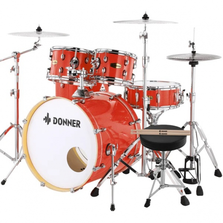

Müzik Dükkanım
Ürünlerimiz

- Fenix FSS-10MLPB Elektro Gitar (Mavi) 5.600₺
- Gibson Slash "Victoria" Les Paul Elektro Gitar (Goldtop) 180.000₺

- Donner DDS-520 5-Parça 22" Akustik Davul (Kırmızı) 28.500₺
- Eastar EDS-480BK 22" 5-Parça Akustik Davul (Mirror Black) 16.000₺

- Johannes Seiler Model 160TW Traditio Akustik Kuyruklu Piyano (Beyaz) 890.000₺

- Blüthner Grand Concert Model1 Akustik Kuyruklu Piyano (Parlak Siyah) 5.500.000₺
- Eastar EVA-3 4/4 Keman Seti (Natural) 4.500₺

- Stentor 1583/A Ham Keman 4/4 (Beyaz) 9.000₺